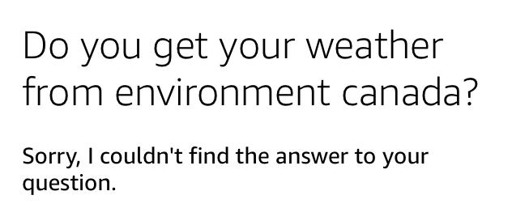
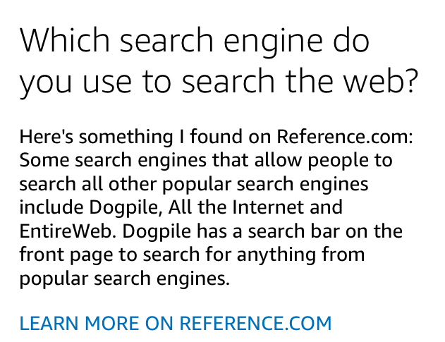
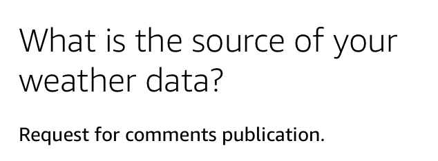
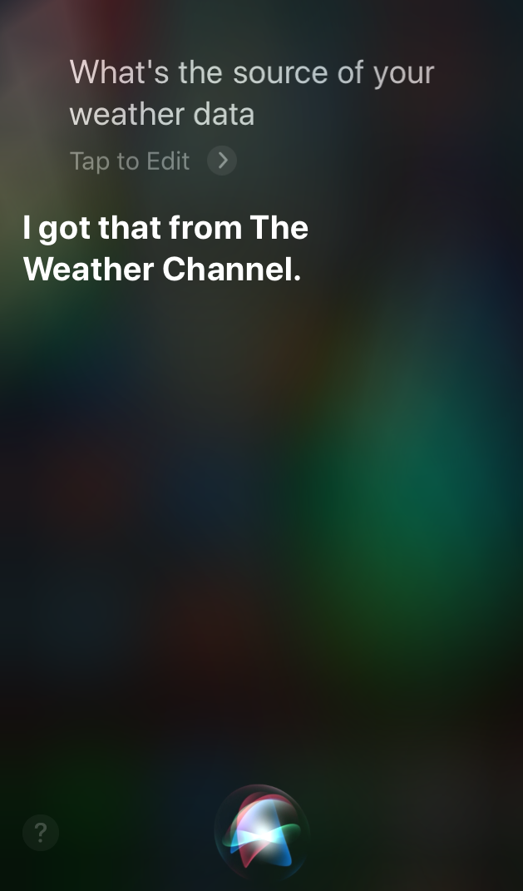

Virtual assitants and source citation
It has been very hot in Waterloo for the past week, and this week shows very little sign of letting up. I don't have AC in my apartment, so coping with the heat has been a challenge. I've taken to asking Alexa for the temperature multiple times a day, in the hopes that the forecast has changed and I can look forward to cooler weather ahead.
This past weekend, when I asked Alexa yet again for the temperature that night, I was informed that there would be a low of 16℃, and I got so excited. That might be enough to get my place cool enough at night to last the entire next day! I immediately checked my phone for an hourly forecast, so I could get an idea of when it would hit that low and how long it would stay there. Imagine my disappointment when the Weather Network showed that it would only hit a low of 18℃, only reach that around 4AM, and then immediately start climbing back to the low 30s.
Had Alexa given me false hope? Where does she get her weather data from, anyway?
Alexa
I decided to ask her. (The following images are screenshots of our conversation taken from the Amazon Alexa app. Our actual talk was not accompanied by fun pictures.)

Okay, maybe I should be more specific:
Maybe that was too specific.
Huh. That raises another question: what are you using to search the Web?
Cool, but not an answer to the question I asked. Let's get back to the weather question:
What does that even mean? Communication failed.
Interestingly, the transcripts of our conversation on the Amazon Alexa app did include the source of the information (AccuWeather.com), along with far more details than are provided in the audio response:
So the issue isn't that Alexa doesn't know the source of the information she provides. It's more likely that the developers haven't developed an intent for Alexa to provide the source when asked.
A few years ago, I developed an Alexa Skill (Alexa skills are to Alexa devices as apps are to smartphones). One of the most challenging parts of that work was defining all of the possible intents. Basically, I had to anticipate the sorts of questions that users would ask and define an intent for each of these question types, to make sure that the skill would recognize and provide what the user wants. If Alexa can't understand my questions about the source of her information, it's probably because the developers did not anticipate that anyone would ask for that, and so didn't define an applicable intent.
Siri
Out of curiousity, I tried asking Siri the same question after asking her for the forecast, and I was pleasantly surprised:
I have no complaints here.
Google Assistant
I plugged in my boyfriend's old Google Home to see what it would do. It didn't understand my question, but asked if I wanted to "know where weather com gets it's data?" and when I said yes, it read a blurb from weather.com that described the various ways they gather weather data. Not exactly the answer to my question, but closer to my intention than anything Alexa was able to provide.
Further Thoughts
Perhaps I'm being a bit nit-picky. After all, when I ask Alexa about things other than the weather, she almost always begins her response by citing her source. However, it bugs me that Alexa hasn't been set up to engage with questions about the source of the information she provides. Misinformation and disinformation are huge problems today. Ideally, the everyday technology we use should not contribute to the confusion, but instead should support us as we assess the credibility of the information we consume.
Hey, what a coincidence! This is one of our goals at Vubble, where I'm currently leading the development of our next generation tool for personalized content recommendations. For an example of how technology can support the search for quality information, check out the Vubble Credibility Meter in our Discovery Box.